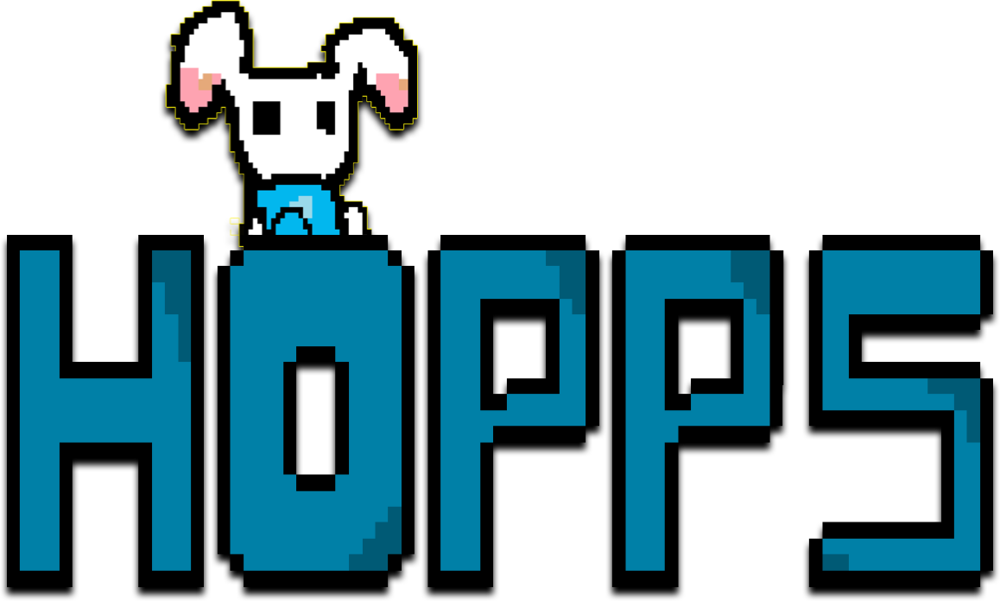
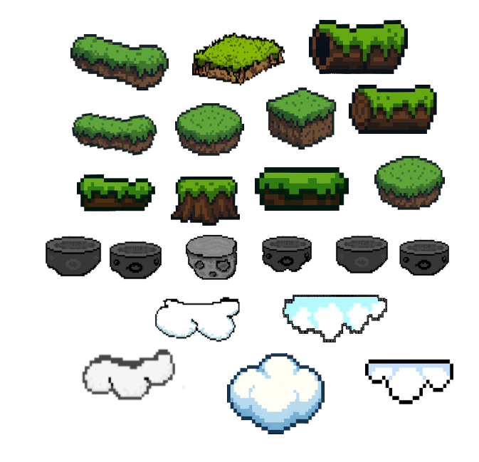
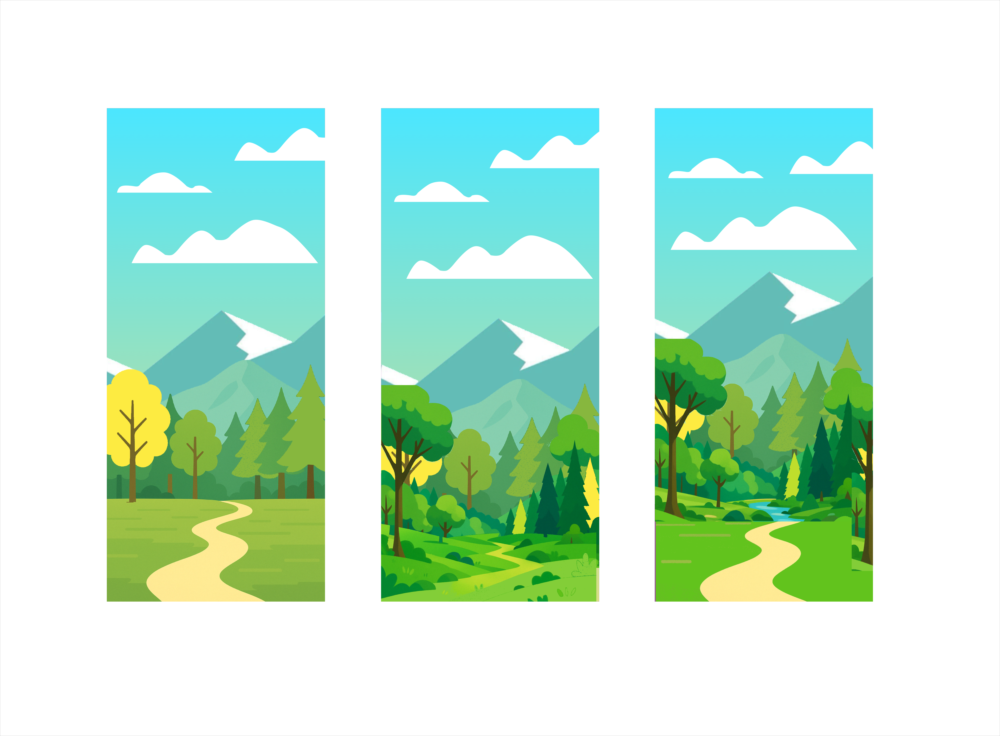
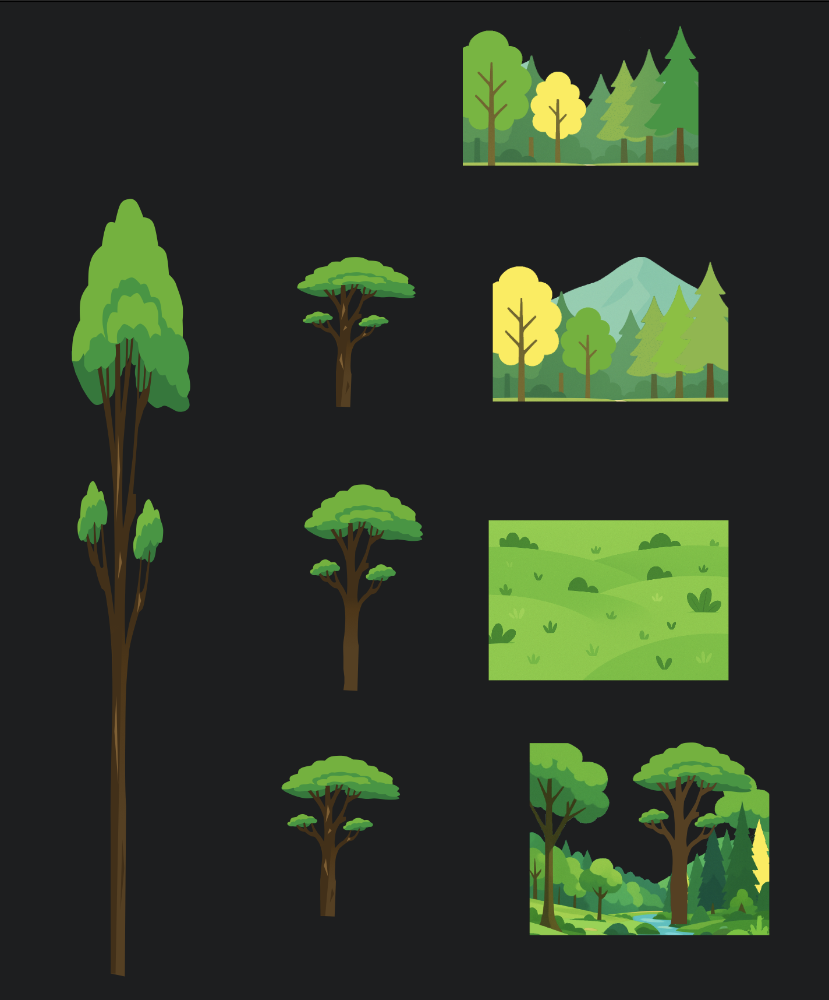
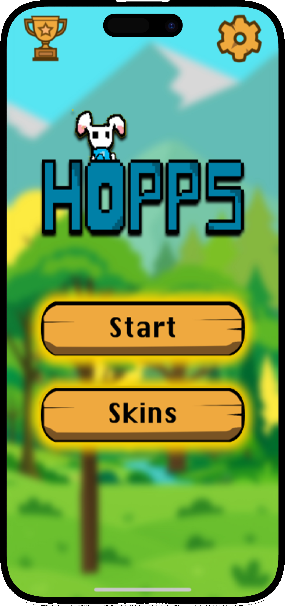
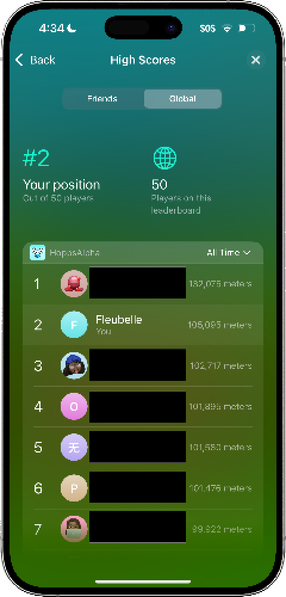
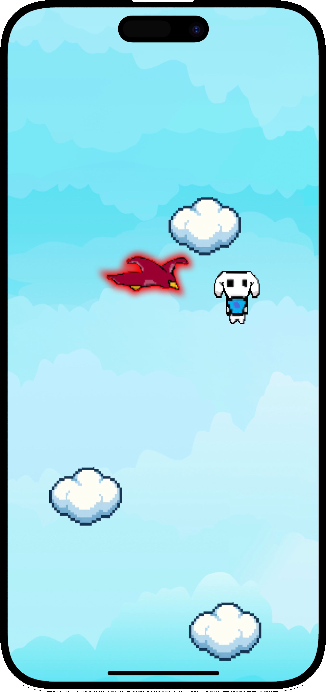

hopps alpha

Project Overview
Hopps Alpha is a 2D vertical platformer game designed for casual gamers who want a fun, stress-relieving experience. Created in a team of five at the Apple Developer Academy, Hopps combines charming visuals, smooth controls, and an infinite world that transitions from the ground to outer space. With over 220 downloads and positive feedback highlighting its addictive gameplay, Hopps showcases my ability to design delightful, user-centered gaming experiences from concept to launch.
Problem & goal
Hopps started as a team challenge to create a casual game that anyone could enjoy — whether to relieve stress, kill time, or simply have fun during a break. We wanted a game that felt light, accessible, and delightful, reflecting our own personalities and shared sense of playfulness. Our goal was to design an experience that speaks to a wide audience while staying true to our vision of simplicity and joy.

Role & Team
I worked as part of a team of five at the Apple Developer Academy. My primary responsibilities included designing the background art and the jumping platforms, as well as helping implement the parallax effect to create depth and immersion. I collaborated closely with the coding team to ensure the gameplay felt intuitive and user-friendly. Additionally, I contributed to front-end development and occasionally supported back-end tasks. To validate the game experience, I led user testing sessions with medical students (to help them manage stress), high school students from an MSU program, and peers at the Apple Developer Academy.
Process
Our design process began with extensive research and inspiration from games like Doodle Jump, Celeste, and Super Mario Bros. As gamers ourselves, we analyzed what made these experiences addictive and fun. We explored various art styles and ultimately chose a combination of flat art for backgrounds and pixel art for the characters and platforms to create a playful, nostalgic look. The main character — a bunny — was inspired by one teammate’s personal obsession and added a charming, relatable touch. Through multiple sketches and drafts, we developed an infinite vertical background transitioning from ground to space, creating a continuous sense of progression and adventure.




Final design
The final game features dynamic parallax effects that bring the environment to life, with moving clouds, shifting mountains, and animated enemies such as birds, eagles, and space aliens. The bunny character has responsive animations, including ear movements, enhancing its personality and charm. Players can choose between tilt controls and touch controls, customize skins, and toggle background music on or off. Additional feedback elements, such as haptic responses, make the gameplay more immersive and satisfying.





Impacts & learnings
As of today, Hopps has over 220 downloads, with 117 players connected to Game Center, reflecting strong engagement for an indie game. Players have described it as fun, beautiful, and highly addictive, which aligns perfectly with our initial goal of creating a stress-relieving, joyful experience. Through this project, I learned how to effectively collaborate with a cross-functional team and communicate design decisions clearly. I also developed a deeper understanding of designing for gameplay, balancing visual delight with usability, and ensuring the overall experience remained intuitive and accessible.
Interested in collaborating?
Let’s work together — I’d love to hear from you.
Get in Touch